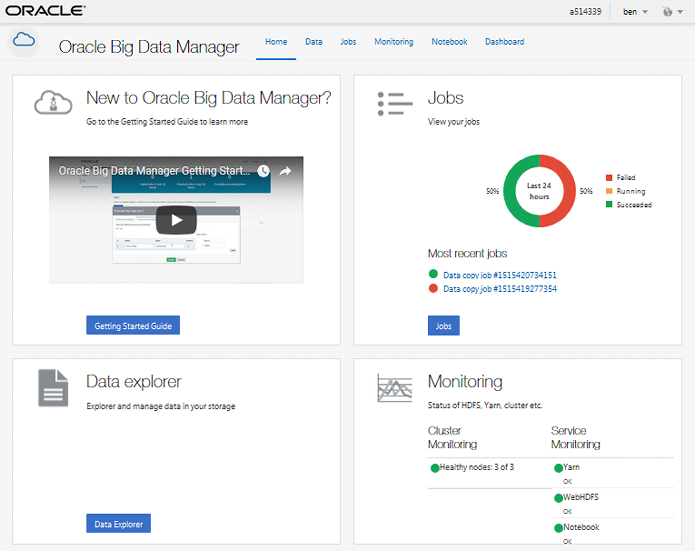
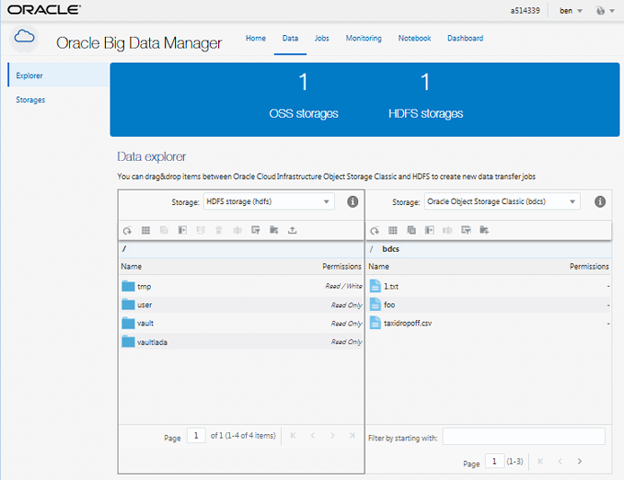
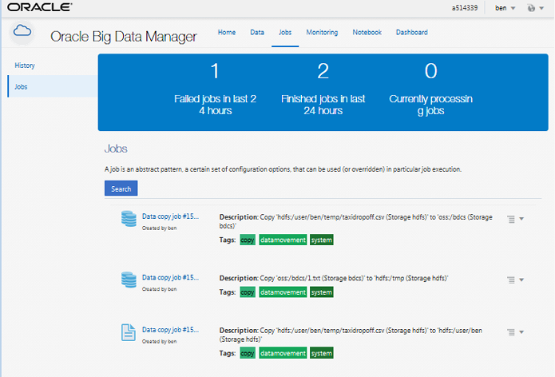
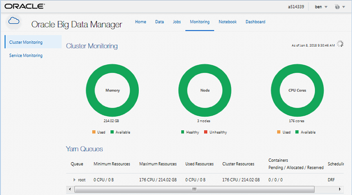
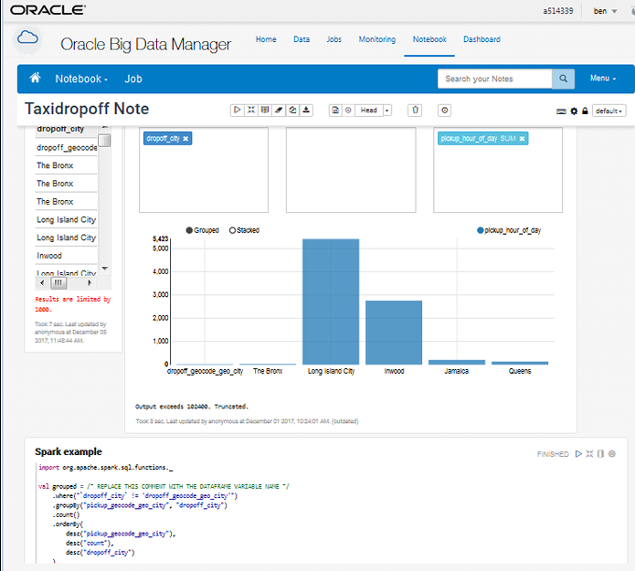
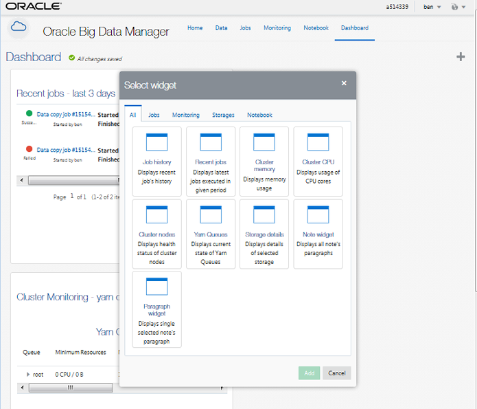

2.2 Navigating the Oracle Big Data Manager Console
The Oracle Big Data Manager console is displayed in a web browser and contains graphical tools for transferring and analyzing data and managing data providers, and for managing users, and roles.
The console has five main sections, which you can access by clicking the links in the tab bar at the top of the page.
Home
The Home page includes basic instructions on how to use Oracle Big Data Manager, and some overview information about jobs and monitoring, along with links to the other main sections of the console.

Description of the illustration home.png
Data Explorer
Use the Data pages to compare, copy, and move files and containers between data sources, including HDFS. You can also upload files, extract the contents from a ZIP archive, import data to Apache Hive, and import and export Apache Zeppelin notes, among other tasks.

Description of the illustration data_explorer.png
Jobs
Use the Jobs pages to review and manage copy jobs.

Description of the illustration jobs_jobs.png
Monitoring
Use the Monitoring pages to monitor the performance of your cluster and the services running on it.

Description of the illustration monitoring_cluster.png
Notebook
Use the Notebook pages to process and analyze data by using Apache Zeppelin notes.

Description of the illustration note.png
When a note is open in the console, you can click Home in the page banner to return to the Notebook home page.
Administration
Use the Administration pages to manage users, roles, and storage providers.
Note:
Only users with administrative privileges have access to the Administration pages. The defaultbigdatamgr user that was created when the cluster was provisioned has administrative privileges.
Dashboard
Add widgets to your Dashboard to display details about status, history, and current activity.

Description of the illustration dashboard_choose.png
Parent topic: Getting Started with Big Data Manager